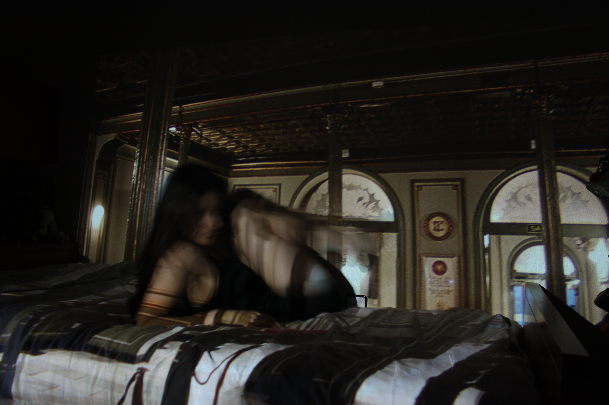
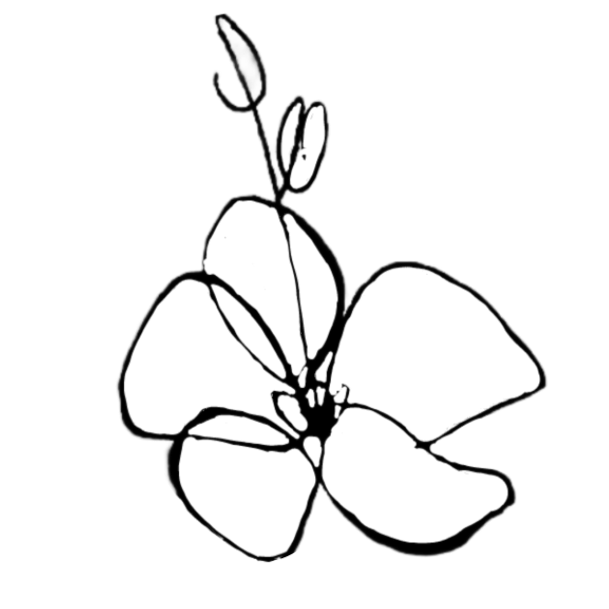
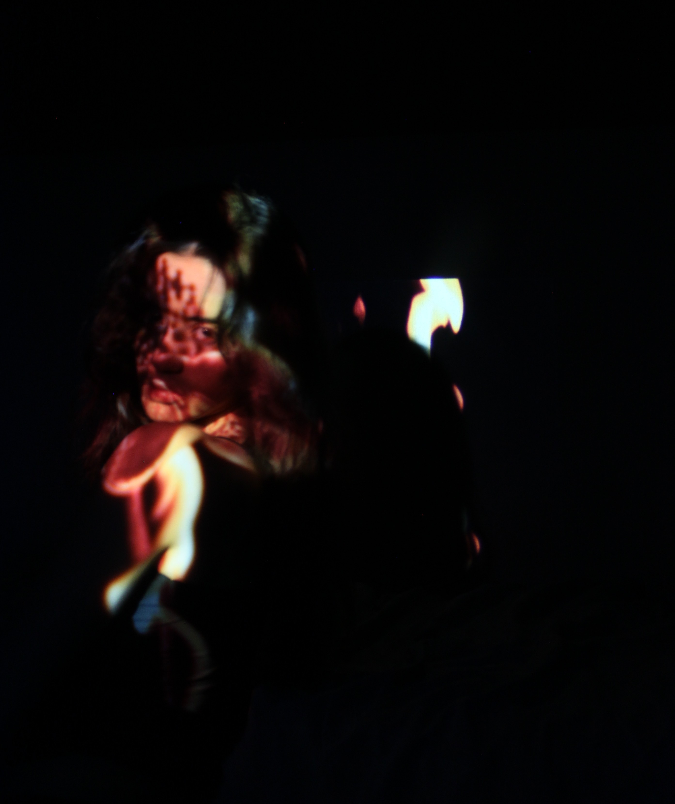
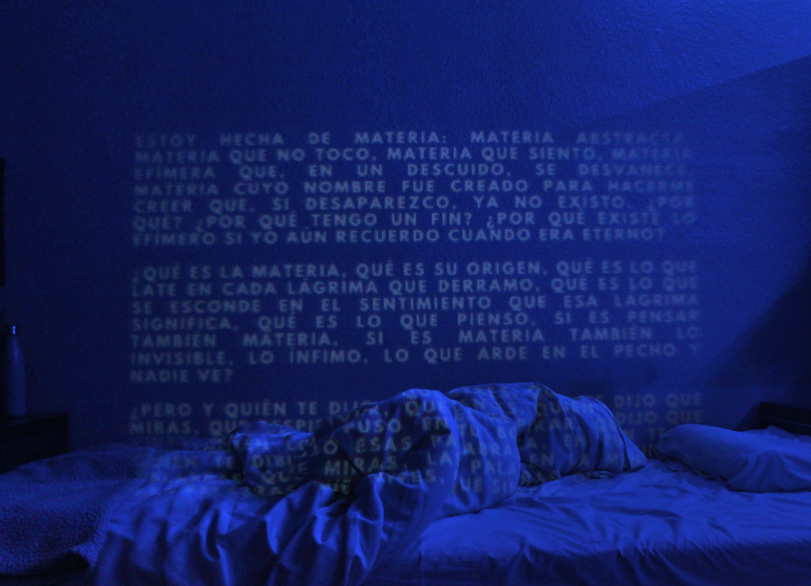
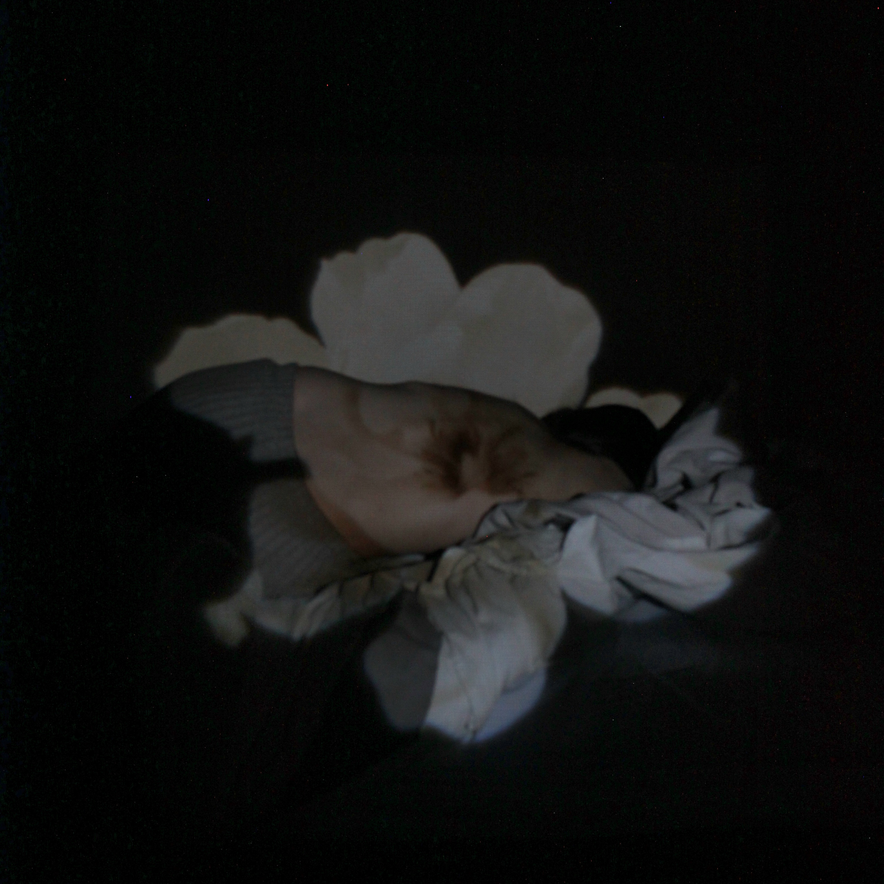
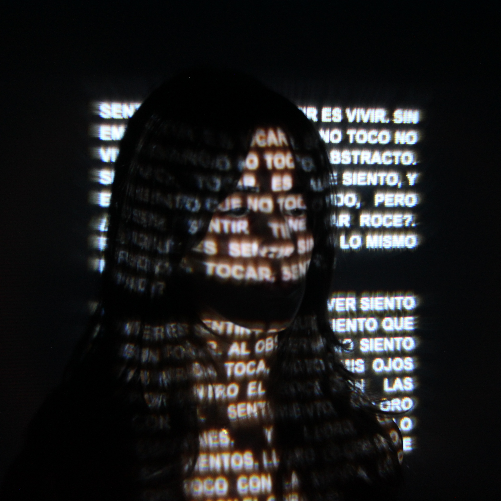
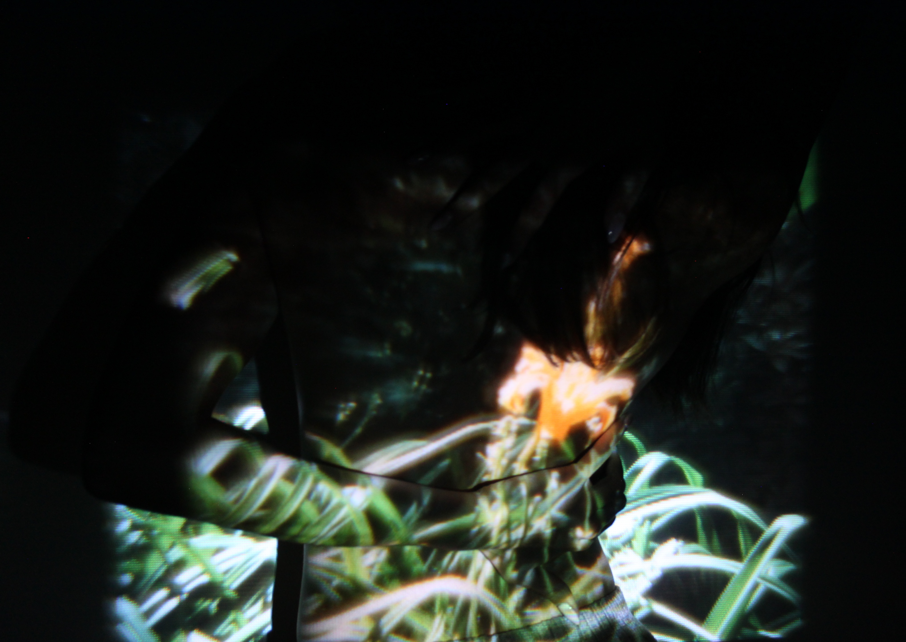

ESCENARIO
Esta obra plantea el cuerpo como escena y como espacio de desdoblamiento. La imagen introduce una relación entre arquitectura, sombra, memoria y presencia.
Proyecto artístico
Lo que el cuerpo recuerda
Donde lo invisible que habita el cuerpo encuentra forma.

01

Esta obra plantea el cuerpo como escena y como espacio de desdoblamiento. La imagen introduce una relación entre arquitectura, sombra, memoria y presencia.

El rostro aparece atravesado por luz y sombra, como si la identidad estuviera construida desde capas inestables.

Investigación sobre el cuerpo como materia sensible y sobre la relación entre palabra, peso, presencia y desaparición.

Pieza centrada en la contención, el aislamiento y el cuerpo como lugar donde la experiencia queda suspendida.

Texto, rostro y proyección se mezclan para pensar lo sensible como algo que no se puede separar del cuerpo.

El cuerpo aparece envuelto en una imagen orgánica y sensible, como una superficie donde todo queda inscrito.
02
¿Cómo se puede mostrar una emoción cuando ya no sabemos como exlicarla con palabras?Me interesa trabajar ese límite donde lo que sentimos empieza a tomar forma en el cuerpo: en la luz, en el color, en la proyeccion o en la imagen. Mi intención es conseguir ue el espectador mo solo vea una obra, sino que sienta que está entrando en u espacio emocionel que quizá reconoce o que le resulta familiar.
Trabajo desde el cuerpo como lugar de experiencia y memoria emocional , explorando el equilibrio entre vulnerabilidad y fuerza. A través de distintos medios, busco dar presencia a estados emocionales que suelen permanecer ocultos, construyendo imágenes donde una figura central dialoga con el espacio y con una atmósfera que amplifica lo que es sentir.
Parto de lo personal, pero no desde lo anecdótico, sino desde la intención de transformar la experiencia individual en algo universal. Me interesa la huella emocional que dejan las relaciones, el amor, la ausencia y el recuerdo. Formalmente, trabajo con contrastes —presencia y vacío, luz y sombra— buscando que la imagen respire y deje espacio para que la emoción se expanda. Cada obra es, en esencia, un intento de comprender lo que significa sentir y de hacer visible esa experiencia compartida.
03
Puedes encontrarme o escribirme aquí.